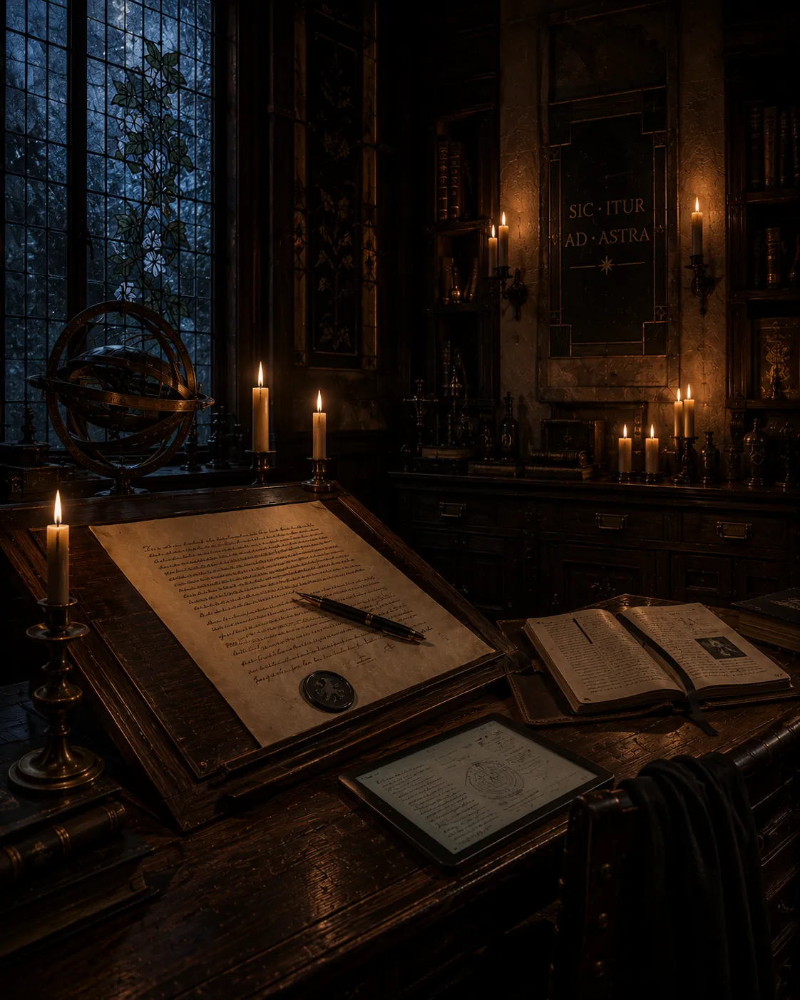

The LecternThe essays, by theme The Open BookFrom My Commonplace Book Sic Itur ad Astra“Thus one goes to the stars”: read on Substack The Armillary SphereTo the ObservatoryThe Star Croft

The LecternThe essays, by theme The Open BookFrom My Commonplace Book Sic Itur ad Astra“Thus one goes to the stars”: read on Substack The Armillary SphereTo the ObservatoryWhere the essays are written.
The essays themselves live on Substack, where you can read them, comment, and have new ones sent to you. This room is their index: every essay, gathered by theme, from the first meditation of the Warrior Monk in 2020 to this week.
On the open book by the lectern are the lines I keep from other writers, in my commonplace book.
Newest first within each theme. Each title opens the essay on Substack.
Stoicism, Zen, and the long practice of perseverance.
Religion, human nature, and the workings of the mind.
Politics, democracy, and civic life.
Success, ageing, choices, and the paths we take.
The craft, the Jacquelyn, and the odds and ends of a writer’s days.
Family, memory, and the people we carry with us.
Science, books, chess, and technology.
© 2026 Marcus Alden Meredith · The Entry Hall · The Threshold